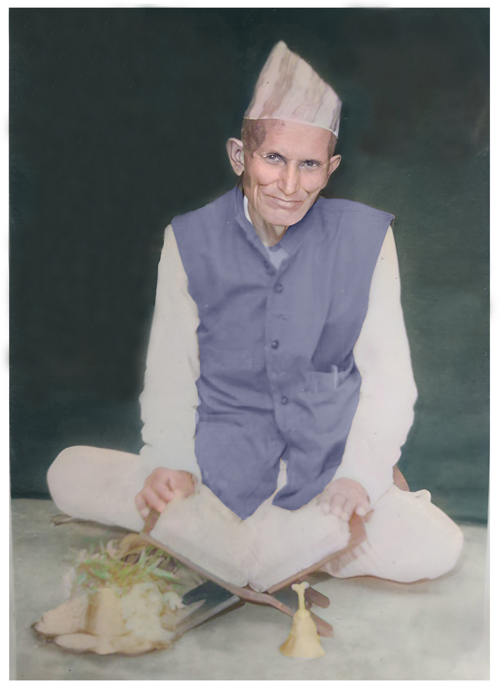
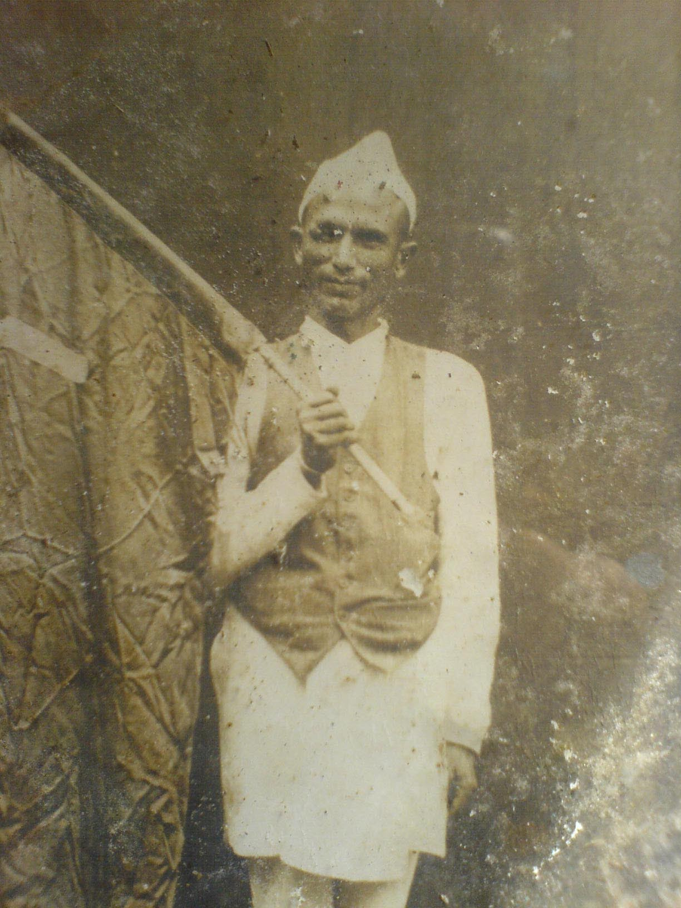

✍️ लेखक: आशिष (पनाती)
परिचय
मेरा अतिनै पूजनीय जिजुबुवाको बारेमा लेख्नु अगाडि आफ्नो पौडेल-वंशको बारेमा केहि शब्द खर्चन चाहन्छु, जसले जिजुबुवाको जीवनी बुझ्न सहायक होस्।
सिस्नेरी ललितपुरमा रहेको मेरो पौडेलवंश मल्ल राजाको पालामा नेपाल खाल्डो (काठमाडौं) भित्रेको आधिकारिक प्रमाण छ। त्यो भन्दा पहिले उनीहरु डोटीको पौडी भन्ने ठाँउमा रहेकाले ‘पौडेल’ भएको रे। हाम्रा पुर्खामध्ये एकजना गोपाल पौडेल धर्म-यज्ञ आदिमा निपुण भनेर काठमाडौसम्म कहलिएका रहेछन्। मल्लराजा सिद्धिनरसिंह मल्ल (शासन इस्वी सम्वत् १६२०-१६६१)को पालामा ललितपुरमा अनिकाल परेछ र राजाले उनै निपुण ब्राह्मणलाई यज्ञ र आवश्यक विधि गर्न निम्ता गरेछन्। यज्ञ गरेपछि पानी परेछ। भिन्न श्रुति अनुसार – त्यो पुत्रेष्टि थियो र यज्ञ गराएर पुत्रलाभ भयो। अनि ब्राह्मणबाट प्रभावित भई राजाले उनलाई सिस्नेरीको सबै डाँडा विर्ता दिएर त्यही बस्न प्रबन्ध गरिदिएछन्। यसरी सुरु भएको रहेछ काठमाडौमा पौडेल जनको बसाइँ। हाम्रो मुलथलो त्यही सिस्नेरी नै हो। पछि मात्र केहि तलतिर चसिडोलमा हाम्रा पुर्खा ओर्लेका हुन्।
अंगिरसको जीवनी
माता पुर्णकुमारी र पिता गणेशदत्तको कोखबाट एक छोरा (अंगिरस) र दुई छोरी जन्मे। अंगिरस र राजा त्रिभुवन एकैदिन जन्मेका रे। त्यसबाट जिजुबुवाको जन्म विक्रम अमावस्या तिथि असार ८, १९६३ (1906 Jun 21) हुन आउछ। उनी जन्मँदा नेपालमा जहानियाँ राणाशासन थियो र त्यसको ताज चन्द्रशमशेरमा पहिरिएका थिए। पृथ्वी वीर बिक्रम शाह नामका मात्र राजा थिए।
उनको बाल्यकालमा नेपालमा भर्खर नमुना स्तरमा बिजुली बलेको थियो – फर्पिङको बिजुली (वि.सं १९६८)। सिंहदरबार बन्यो (वि.सं १९६५)। नेपाल खाल्डोबाट बाहिर जाने कुनै मोटर बाटो थिएन। तरपनि आवतजावत गर्न गोरेटो बाटोहरु हुन्थे र दिन वा महिनौ लगाएर यात्रा गरिन्थ्यो।
१३ वर्षको कलिलो उमेरमा ३९ वर्षको गणेशदत्तले अंगिरसलाई छोडेर जानुभयो। त्यहाँबाट दुःख र गरिबीको श्रृंखला सुरु भयो। सानो उमेरमा नै घरको मुली हुनपर्यो। आमाले ज्याला गरेर घर सम्हाल्नुभयो।
अंगिरसको सामाजिक जीवन
अंगिरस जिजुबुवा अतिनै दयालु हुनुहुन्थ्यो। यजमानसँग पैसा छैन भने आफ्नै पैसाले यजमानी गरिदिनुहुन्थ्यो। गरिबको मुद्दा आफ्नै खर्चमा लड्नुहुन्थ्यो। कसैलाई अन्याय परेमा त्यसको पक्षमा आफ्नो ज्यानको पर्वाह नगरी निडर भई उभिनुहुन्थ्यो। खेति गर्न कुलो बनाउनु पर्दा रातभर जाग्राम भई सारा गाउँका लागि कुलो बनाइदिनु हुन्थ्यो। उहाँको धार्मिक कुरामा पनि चिन्तन थियो। कुलपुजामा सक्रिय भई लाग्नुहुन्थ्यो। त्यसैले गाउँभरिकाले उहाँलाई स्नेह र सम्मानका साथ ‘हजुरबुवा’ भनि पुकार्थे।
अंगिरस पौडेल कुलपूजा र विधिका ज्ञाता हुनुहुन्थ्यो र त्यसतो पूजाहरुमा मुलकर्ता हुनुहुन्थ्यो। सिस्नेरी पौडेलको वंशावली बन्ने क्रममा अंगिरसले दिएका कुल तथा कुलदेवतासम्बन्धी प्राप्त अनुश्रुतिहरू, मन्त्र तथा पूजाविधिहरू उल्लेखनीय छन्।

अंगिरसको राजनीतिक जीवन
नेपालमा २००७ सालमा प्रजातन्त्र आउँदाखेरि आन्दोलनको क्रममा जिजुबुवा जेलमा हुनुहुन्थ्यो। पछि प्रजातन्त्र आएपछि उहाँलाई छोडियो। २००७ सालमा राजनीतिक परिवर्तन त भयो तरपनि किसानको दैनिक अवस्थामा केहि फरक आएन। किसानहरु मारमा थिए। त्यतिबेला किसानहरुले राणाहरुलाई र मालमा १ रोपनीको ४२ पाथिको दरले चामल बुझाउनु पर्थ्यो। त्यो पनि बोकाएर ठाँउमा लगेर बुझाउनु पर्थ्यो। यो कुरा रैकर जग्गाको हकमा लागु हुन्थ्यो, विर्तावाल जग्गामा होइन। र, गाँउभरिका जग्गा रैकर जग्गा थिए। आफू स्वयं किसान भएकोले जिजुबुवाले पद्मबहादुर बुढाथोकि, गोपाल पण्डित, गोविन्द, बासु पासा, टंकप्रसाद (जिउँदो सहिद जो पछि प्रधानमन्त्री भए) र अरुहरु लागेर २००७ सालमा किसान दल खोल्नुभयो। जिजुबुवाचाहिं सेक्रेटरी (सचिव) हुनुभयो। त्यस पार्टीबाट पदको लाभ लिने धेरै निस्किए, मन्त्री पनि भए तर किसानको बारेमा बोलिदिने कोही भएन। पछि सामन्त र जमिन्दारहरू परिवर्तित व्यवस्थाका नेताहरू बन्न पुगे। यसरी राष्ट्र सामन्ती शोषणबाट मुक्त हुन सकेन। पार्टी निस्क्रिय जस्तै भयो। वि.सं २०११ सालमा राजा त्रिभुवनको देहावसान भयो। राजा त्रिभुवन अंगिरसप्रति नरम धारणा राख्थे। राजाको निधनपछि त यो मुद्दा झन् ओझेलमा पर्यो। त्यसको विरोध गर्ने र किसानको माग सम्बोधन गराउने क्रममा बि.सं २०१२ सालमा अनसनमा बस्नुभयो। त्यसक्रममा उहाँ लगायत २०-२५ जना गिरफ्तार पर्नुभयो। जिजुबुवा नख्खु जेलमा बस्नु भयो। अन्तिम समयसम्म पनि पानी पनि नखाई उहाँ मागको लागि लागिराख्नु भयो। भौतिक अवस्था अतिनै शिथिल हुदाँपनि आफ्नो मार्गबाट बिचलित हुनुभएन। जेलजीवन करिब एकमहिना चल्यो र तत्कालिन सरकारले अनेक प्रलोभन देखाउन थाल्यो। अरु सबै सम्झौता गरी जेलमुक्त भएपनि उहाँ छुट्न मान्नुभएन। पछि उहाँलाई वीर अस्पतालमा ल्याई सलाईन-पानी दिन थालियो। अन्ततः शासकले घुँडा टेक्यो। यही संघर्षको फलस्वरुप अबउपरान्त किसानले चामलको सट्टामा धान दिए हुने भयो। यसबाट किसानलाई धेरै राहत भयो।
हजुरबुवाको संघर्षकै प्रत्येक्ष परिणाम २०२१ सालको नापीले ल्यायो। भुमिसुधार ऐनमा विर्तावालको जग्गाको चारभागको एक भाग कमाउनेले पाउने भए, अनि मालमा धानपनि बुझाउन नपर्ने भयो। फेरि २०३५ सालमा आधा भयो। अंगिरसको नाम खासै कसैलाई थाहा नभएपनि कृषिप्रधान देशमा अनगिन्ति मानिसले त्यसको फल चाखे।

बाँकी काम
मैले माथि लेखबद्द गरेका कुराहरु मैले उहाँकै सँगत गरेका परिवारको सदस्यहरुबाट लिएको हुँ। अझपनि उहाँका कति राजनीतिक र सामाजिक पक्ष बाहिर आउन सकेको छैन। तर यति भन्नै पर्छ उहाँजस्तो आफ्नो इमानदारीतामा कहिल्यै सम्झौता नगर्ने मान्छे र न्याय र सत्यका लागि जीवन अर्पण गर्ने व्यक्ति कमनै पाइन्छ। मैले sisneripoudel.com मा गरेको सानो प्रयास उहाँकै प्रेरणा हो र उहाँमै समर्पित छ। उहाँले आफ्नो कुल, समाज र देशकै लागि त्याग गर्नुभयो। त्याग विपी र गणेशमानहरुले पनि थुप्रै गरे तर उनीहरुको नाम अमर भयो तर जिजुबुवाको त्याग ओझेलमा पर्यो। यो एकदम दुर्भाग्य हो।
✍️ Writer: Aashish (Great-grandson)
Introduction
Before writing about my most revered great‑grandfather, I want to spend a few words on our Poudel lineage so that his life story is easier to understand.
There is official evidence that my Poudel lineage in Sisneri, Lalitpur entered the Kathmandu Valley during the Malla period. Before that, they lived in a place called Paudi in Doti—hence the surname “Poudel.” Among our forefathers, one Gopal Poudel was known in Kathmandu for his mastery of Vedic rites and sacrifices. During the reign of Malla king Siddhi Narsingh Malla (CE 1620–1661), Lalitpur suffered a severe drought and the king invited this learned Brahmin to conduct the rites; after the yajna, rain fell. According to another version, it was a putreshti and the king was blessed with a son. Impressed, the king granted him all the hills of Sisneri as birta (tax‑free land) and arranged for his settlement there. Thus began the Poudel settlement in Kathmandu. Our original home is that Sisneri itself; only later did some ancestors descend somewhat south to Chasidol.
Biography of Angirash
To mother Purnakumari and father Ganeshdatt were born one son (Angirash) and two daughters. It is said Angirash and King Tribhuvan were born on the same day; from this, his birth date comes to Vikram Samvat 1963, Ashadh Amavasya (Asar 8), i.e., June 21, 1906. At his birth, Nepal was under the hereditary Rana regime and the crown rested on Chandra Shamsher; Prithvi Bir Bikram Shah was king in name only.
In his childhood, electricity had only just lit Nepal at a model level—the Pharping hydropower (VS 1968). Singha Durbar had been built (VS 1965). There were no motorable roads out of the Valley. People traveled on footpaths, taking days or months.
At the tender age of thirteen, his 39‑year‑old father, Ganeshdatt, passed away. From there began a chain of hardship and poverty. At a young age he had to become the head of the household, and his mother kept the home going by working for daily wages.
Social Life of Angirash
Angirash Jijubuwa was very compassionate. If patrons had no money, he would perform priestly duties at his own expense. He fought legal cases for the poor with his own funds. If someone suffered injustice, he would stand up for them fearlessly, caring nothing for his own life. When irrigation canals were needed for farming, he would keep vigil through the night and build them for the whole village. He was thoughtful in religious matters and active in the family deity worship. For this, the entire village affectionately called him “Hajurbuwa.”
Angirash Poudel was a knowledgeable practitioner of family worship and rites and was the chief officiant in such rituals. In compiling the Sisneri Poudel genealogy, the oral traditions he provided about the clan and clan deities, as well as mantras and ritual procedures, are noteworthy.
Political Life of Angirash
When democracy came in 2007 BS, Jijubuwa was in prison for his role in the movement; he was released after the change. But although politics shifted in 2007, the daily condition of peasants did not change. Peasants were suffering: they had to deliver rice to the Ranas at the rate of 42 pathi per ropani, carrying it to the collection point themselves. This applied to raikar lands, not birta holdings, and all the village lands were raikar. Being a farmer himself, he, together with Padmabahadur Budhathoki, Gopal Pandit, Govinda, Basu Pasa, Tank Prasad (the ‘living martyr’ who later became Prime Minister) and others, founded the Kisan Dal in 2007 BS, with Jijubuwa as secretary.
Many later took advantage of positions, even becoming ministers, but few spoke for the peasants. Feudal landlords turned into leaders of the new order, and the nation remained trapped in feudal exploitation; the party became almost inactive. In 2011 BS King Tribhuvan—who held a sympathetic view toward Angirash—passed away, and the issue receded further. Pressing for peasants’ demands, in 2012 BS he began a hunger strike and, along with some 20–25 people, was arrested. Jijubuwa was kept in Nakkhu Jail. Even at the end he refrained from taking water, yet he did not swerve from his path despite a very weak physical state. The jail term lasted about a month; the then‑government tried many inducements. Others agreed to terms and were released, but he refused. He was later brought to Bir Hospital and given saline. Finally, the rulers yielded: thereafter peasants could deliver paddy instead of milled rice, which greatly eased their burden.
A direct outcome of his struggle arrived with the 2021 BS land survey. Under the Land Reform Act, one‑quarter of birta land was granted to the cultivators, and they no longer had to pay grain tax. In 2035 BS the burden was halved again. Although few know his name, in an agriculture‑based country countless people have tasted the fruits of that struggle.
Remaining Work
What I have written above comes from family members who spent much time with him. Many aspects of his political and social life have yet to surface. Still, it must be said: people who never compromise on integrity and devote their lives to justice and truth are rare. My small effort on sisneripoudel.com is inspired by him and dedicated to him. He sacrificed for his lineage, society, and country. B. P. and Ganesh Man also made many sacrifices and became immortal, but my great‑grandfather’s sacrifice faded into the shadows—an unfortunate reality.